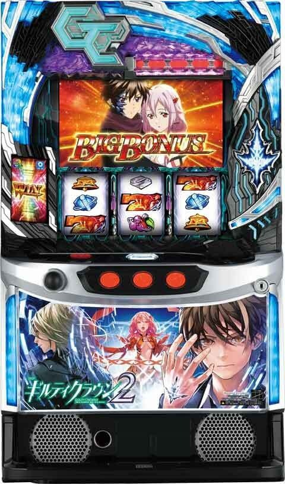
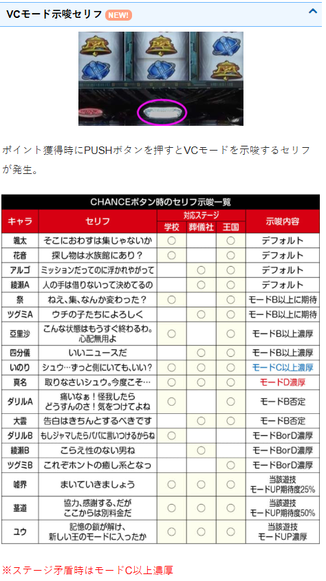
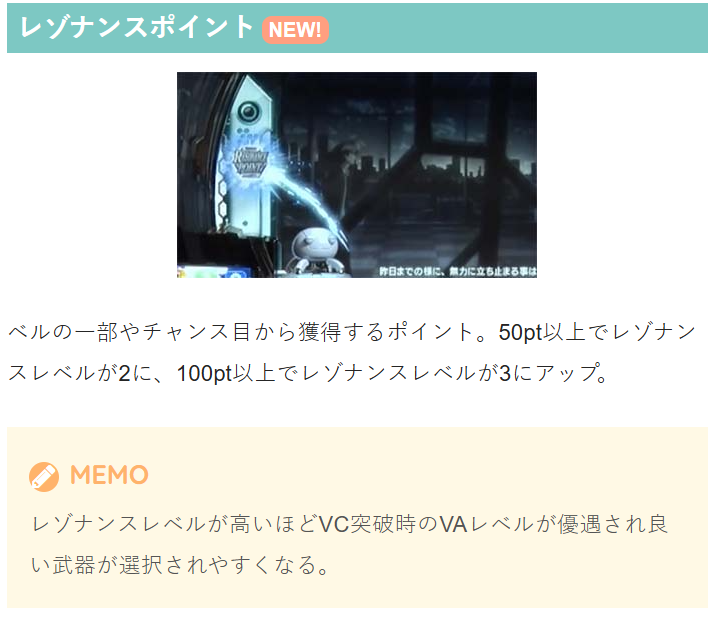
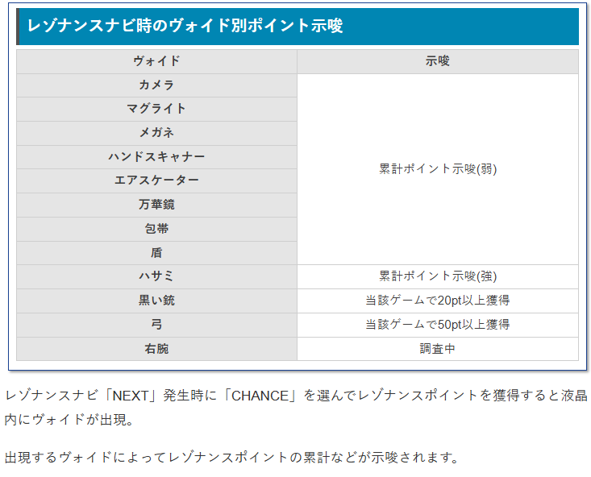
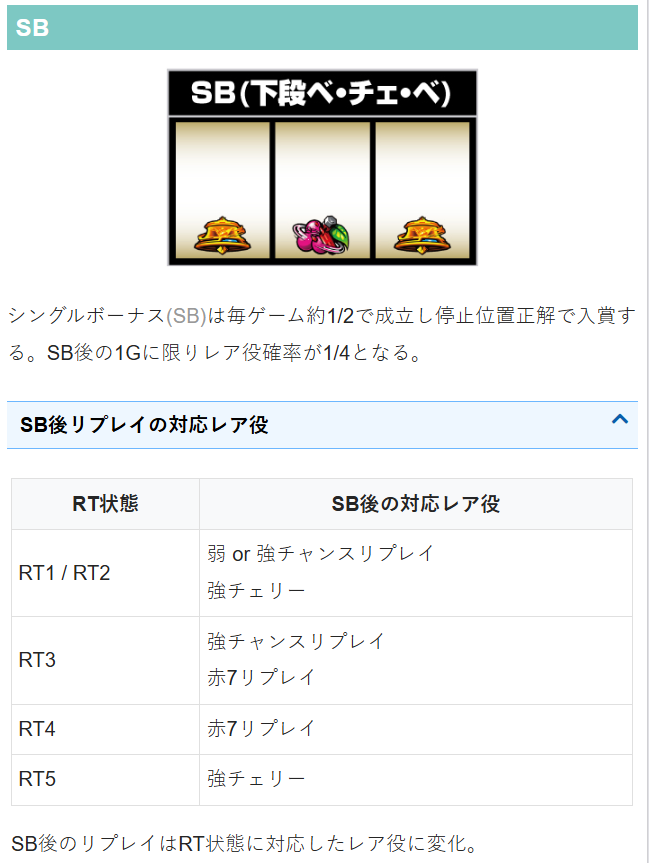
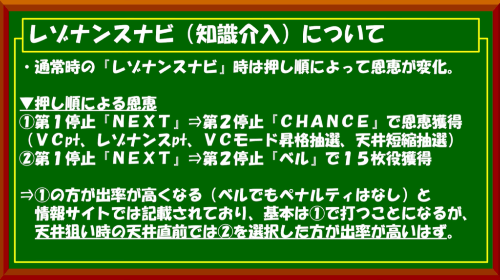
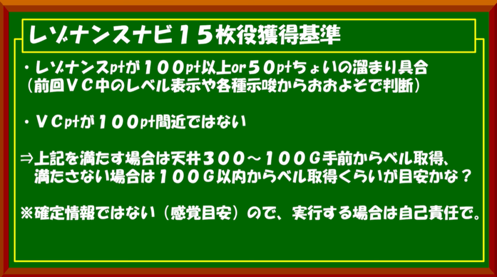
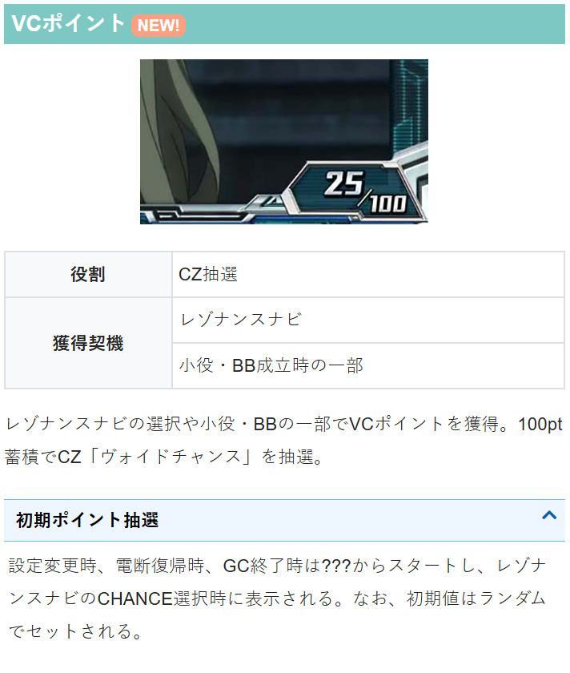
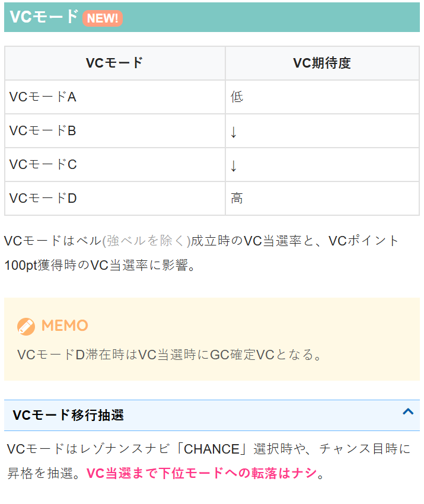
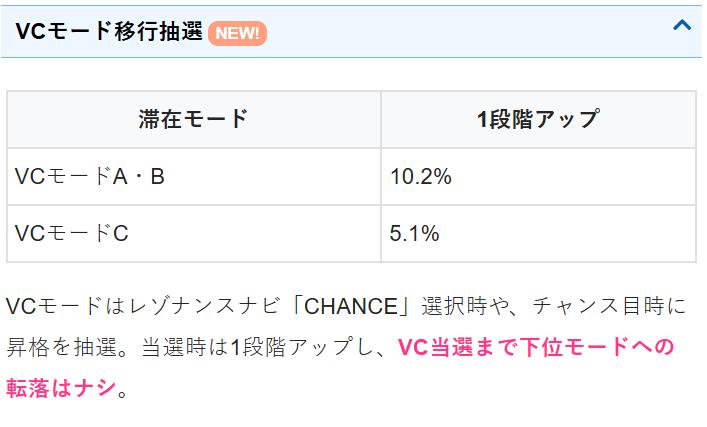

ギルティクラウン2

【天井情報】
通常時(BB＆AT間)1000GでGC（ギルティクラウン）確定のVC（ヴァイドチャンス）に移行。
短縮も含めた天井までの平均ゲーム数は約800G
【リセット判別】
不明
【有利区間について】
不明
狙い目
【リセット狙い】
こちらのブログ記事を参考。トキサワの日常
リセット狙いの基本的な手順
リセット台を0Gから打ち、レゾンナスナビが出るまで消化。
レゾンナンスナビ後、示唆やポイントで押し引き。
VCポイント 80pt以上からポイント消化まで。モードB以上なら70pt以上から。
モードC以上 ヴォイドチャンス（CZ）当選まで
やめ時
VCポイント到達時は前兆発生するため外れたらやめ
モードC以上時はCZ当選して外れたらやめ
AT当選時はAT終了後即やめ。一応１G回してやめ？
モード示唆について
確認すべきところは、以下5項目。詳細はちょんぼりすた参照。
・VCモード示唆セリフ 重要度3
・モバイルコンパネ演出 重要度2
・ベルの前兆発生 重要度2
・BB初期ゲーム数 重要度1
・ステチェンとアイキャッチ 重要度1
【ゲーム数天井狙い】
500G
AT間ハマリ 1000G以上（データ機） 420G
CZ間ハマリ毎のボーダー調整（メニュー履歴から確認）
CZ間 0-200ハマリ ボーダーを50G上げる
CZ間 201-500ハマリ ボーダー通り
CZ間 501以上 ボーダーを50G下げる
【CZ間ハマリ狙い】
メニュー画面からCZ間ハマリとヴォイドを確認出来る。
CZ間がハマるほど、VCモードやレゾナンスレベルが上がっている可能性が上がる。
メニュー画面の情報からCZ当選まで打てる様な台が見つかるかも？
※メニュー画面で右を押せば履歴の確認、更に右を押せばヴォイドの確認が出来る。
CZ間ハマリ別狙い目（暫定）
CZ間不問 「ハサミ」、「右腕」 CZ当選まで
CZ間800Gハマリ以上 「盾」、「ハサミ」、「弓」、「右腕」 CZ当選まで
※期待値表で出せない部分のため、暫く暫定のままになりそう。
【VCポイント狙い】
90ptから
VCモードはVC当選まで転落しないため、CZ間がハマるほどVCモードが上がる
モードC以上ならVC当選までといった狙い方になりそう？
モードDはAT確定のVCとなる

【レゾナンスポイント狙い】
ptが溜まるほどAT開始時に突入するヴォイドアタックの性能が上がる。
示唆は不明な部分が多いが、ハサミと右腕出現時はCZ当選まで？（ptはCZ当選で消化される）


【SB（シングルボーナス）狙い】
以下の出目の場合、次の1ゲームに限り1/4でレア役となる。
単体で狙う価値はあるかもだけど、カニ歩きになるため推奨しない。
打つとしたら高確以上に滞在してそうなら？
やめる時は消化してやめる感じ？

【レゾナンスナビについて】
基本的にCHANCEの恩恵を狙う方が良さそう。
天井狙い時に天井直前（100G手前くらいから？）の場合はベルで15枚役を優先する感じが良い？
参考元 ヲ猿（youtube)


【有利区間関連狙い】
不明
やめ時
ボーナスまたはAT終了後やめ？
筐体上部のヴォイドゲノムランプが点灯しているとVC当選のチャンス等あるため消えるまでは打った方が良さそう？
その他



参考元
基本情報
- メーカー: アクロス
- 機械割: 97.9% 〜 113.6%
- 導入開始日: 2025年06月02日（月）
- ゲーム性概要: ●リアルボーナス搭載のスマスロAT機 ●通常時はCZやボーナスからATを目指すゲーム性 ●お馴染みである多彩なRTがゲーム性の幅をふくらませる ●ATは純増2.0枚/Gで終了後は必ずCZへ突入 ●ATのゲーム数を決めるヴォイドアタックも健在 ●スペシャルAT「四度目の黙示録」搭載


打ち方
打ち方・小役
打ち方（小役狙い）
［最初に狙う絵柄］ 左リール上段付近にBARを目押し。スイカ停止時は中＆右リールにスイカを狙おう。その他の停止形は中＆右リールフリー打ちでOKだ。

［スイカ停止時］ 中リールは白7orBAR、右リールは赤7目安で狙おう。

［リプレイフラグの種類］

［ベルフラグの種類］

［その他のレア役・SB］

レゾナンスナビの打ち方
【ポイントを獲得or15枚獲得を選択】 通常時にレゾナンスナビが発生した時は、液晶上に表示されているアイコンに対応したリールを止めることで、自分で恩恵を選択できる。 NEXT（第1停止）→CHANCE（第2停止）を選ぶとチャンス目が停止してレゾナンスポイントなどの恩恵を獲得。ベルが表示されているリールを止めるとポイントなどの恩恵はないが、15枚を獲得できる。

チャンス目停止時の恩恵などはコチラ
択役解説＆アツイ打ち方
おもにAT中、内部的に択役（6択のチャンスリプレイやレゾナンスベル）が成立している場合、押し順に正解すればチャンスリプレイ・チャンス目が停止。特定の演出発生時は択役濃厚なので、変則打ちをして楽しむこともできる。
択役成立時の演出パターン例
レバーON時の色告知演出発生
ナビなしの押し順ベル成立時
サブ液晶に「択役」表示時
［赤7周辺を押すと第1停止の成否がわかる］ 各リールの赤7付近を目押しすることで、第1停止が正解かどうかを出目で判別できる（右リールはフリー打ちでも判別可能）。 正確には左リールは⑮〜⑳、中リールは⑪〜⑳の範囲、右リールはどこを押してもOKなのだが、赤7を枠内にOKだ。

［チャンスリプレイの場合］

［レゾナンスベルの場合］

SBの組み合わせと察知手順
SBは左リール2択、中リール4択、右リールは4択の計32種類が存在。全リールの目押し位置に正解するとSBが入賞する仕組みだ。 停止出目でそこまで正解しているかどうかを判別できるので、把握しておけばさらに楽しく打つことができる。

［中押し手順での察知］ 中リールに4択になるいずれかが停止したら、左リール枠内に赤7を目押し。

左枠内に赤7停止で不正解（SB以外の可能性もある）。

左リール下段にベル停止で正解。あとは右リールの4択に正解すればSB入賞になる。

※上記以外が停止した場合はレア役濃厚
ボーナスフラグ判別
BIG成立察知手順
［中押しで赤7を目押し］ 中押しでBIG成立の有無を判別可能。まずは中リールに赤7を目押し。

※一部レア役を取りこぼす可能性があるので注意
［中段赤7停止後］ 左リールの枠上or枠上2コマに赤7を目押ししよう。

［赤7右上がりテンパイ］ 赤7頭BIGor単チェリーorリーチ目役。ただし、左リールの目押しが遅かった場合はハズレでも停止する可能性がある。

［赤7非テンパイ］ 上記のようにテンパイしなかった場合はハズレorSBor白7頭BIG。 中押し白7手順にスライドしよう。

［中押しで白7を目押し］ 中段に白7を狙おう。

［右リールに白7をビタ押し］ 中リール中段に白7が停止したら、右リール中段に白7をビタ押しして、白7が中段テンパイしたら白同色BIG。赤7がスベって来て左下がりにテンパイしたら白異色BIG or SB or ハズレになる。 上記以外の停止形はレア役濃厚だ。

解析情報通常時
小役関連
［非SB中/ RT状態共通 ］小役確率
| 役 | 確率 |
|---|---|
| SB | 1/1.9 （32択で正解） |
| 押し順ベル（1or15枚） | 1/3.7 （6択で正解） |
| レゾナンスレベル（チャンス目or15枚） | 1/30.0 （6択で正解） |
| 共通ベル（2枚） | 1/66.3 |
| 強ベルA＆B（15枚） | 1/2048.0 |
| 弱スイカ（2枚） | 1/163.8 |
| 強スイカA＆B（2枚） | 1/273.1 |
| 単チェリー（2枚） | 1/1638.4 |
| リーチ目役 | 1/5461.3 |
| 確定チェリー | 1/16384.0 |
※SBはBIG内部中は成立しない ※弱＆強スイカは設定1の数値 ※強ベル・強スイカのABはリール制御が違う
レゾナンスベル成立時はレゾナンスナビが発生しないこともあるため、通常時のチャンス目は必ずしもレゾナンスナビ経由で出るとは限らない。
［非SB中/ RT状態別 ］小役確率
| 役 | RT1 | RT2 | RT3 |
|---|---|---|---|
| 通常リプレイ | 1/8.9 | 1/8.9 | 一 |
| 平行リプレイ | 1/80.7 | 1/5461.3 | 1/5461.3 |
| 弱チャンスリプレイ | 1/256.0 | 1/256.0 | 1/2520.6 |
| 強チャンスリプレイ | 1/4096.0 | 1/4096.0 | 1/394.8 |
| 6択弱チャンスリプレイ | 一 | 1/75.9 | 1/11.3 |
| 6択強チャンスリプレイ | 一 | 1/682.7 | 1/22.6 |
| 弱チェリー | 1/136.5 | 1/204.8 | 1/2520.6 |
| 強チェリー | 1/819.2 | 1/819.2 | 1/4096.0 |
| 赤7フェイクリプレイ | 一 | 一 | 一 |
| 赤7揃いリプレイ | 一 | 一 | 1/4096.0 |
| 役 | RT4 | RT5 | BIG内部中 |
| 通常リプレイ | 一 | 一 | 1/8.0 |
| 平行リプレイ | 1/5461.3 | 1/8.1 | 1/9.1 |
| 弱チャンスリプレイ | 1/2520.6 | 1/2520.6 | 1/256.0 |
| 強チャンスリプレイ | 一 | 一 | 一 |
| 6択弱チャンスリプレイ | 一 | 一 | 一 |
| 6択強チャンスリプレイ | 一 | 一 | 一 |
| 弱チェリー | 1/2520.6 | 1/2520.6 | 1/136.5 |
| 強チェリー | 1/4096.0 | 1/81.9 | 1/256.0 |
| 赤7フェイクリプレイ | 1/10.5 | 一 | 一 |
| 赤7揃いリプレイ | 1/24.5 | 一 | 一 |
※6択の弱＆強チャンスリプレイは押し順不正解で平行リプレイが揃う ※狙え非発生時の赤7フェイク＆赤7揃いリプレイは弱チャンスリプレイが停止
RT2〜4の平行リプレイ、RT3〜5の弱チャンスリプレイ・弱チェリー（リプレイフラグ）、RT3＆4の強チェリー（リプレイフラグ）はボーナス濃厚となる。
［SB中/ RT状態共通 ］小役確率
| 役 | 確率 |
|---|---|
| SB | 1/1.9 （32択で正解） |
| 共通15枚ベル | 1/15.7 |
| 共通2枚ベル | 1/6.6 |
| 共通チャンス目（1枚） | 1/9.0 |
| 強ベルA＆B（15枚） | 1/4096.0 |
| 弱スイカ（2枚） | 1/8192.0 |
| 強スイカA＆B（2枚） | 1/910.2 |
| 単チェリー（2枚） | 1/8192.0 |
| リーチ目役 | 1/5461.3 |
| 確定チェリー | 1/16384.0 |
※弱＆強スイカは設定1の数値 ※強ベル・強スイカのABはリール制御が違う
［SB中/ RT状態別 ］小役確率
| 役 | RT1 | RT2 | RT3 |
|---|---|---|---|
| 弱チャンスリプレイ | 1/8.6 | 1/8.6 | 1/2520.6 |
| 強チャンスリプレイ | 1/4096.0 | 1/67.1 | 1/7.4 |
| 強チェリー | 1/47.8 | 1/159.1 | 1/1213.6 |
| 赤7揃いリプレイ | 一 | 一 | 1/4096.0 |
| 役 | RT4 | RT5 | BIG内部中 |
| 弱チャンスリプレイ | 1/2520.6 | 1/2520.6 | 一 |
| 強チャンスリプレイ | 一 | 一 | 一 |
| 強チェリー | 1/1213.6 | 1/7.3 | 一 |
| 赤7揃いリプレイ | 1/7.4 | 一 | 一 |
※狙え非発生時の赤7揃いリプレイは弱チャンスリプレイが停止
内部状態関連
高確・超高確率概要
低確・高確・超高確の3種類があり、滞在状態でレア役成立時やボーナス成立時のAT当選率が変化する。

モード
VCモード性能
| 項目 | 内容 |
|---|---|
| 種類 | A＜B＜C＜D |
| 恩恵 | モードによってベル契機（強ベル除く）と レゾナンスポイント契機のCZ当選率が変化 |
| モード昇格契機 | レゾナンスナビのCHANCE選択時の抽選 |
| その他 | CZ当選までモードの転落なし |
ベル（強ベルを除く）契機とVCポイント100ptごとのCZ当選率に影響する4種類のモード。VCモードD滞在中はCZ当選＝確定CZになるためAT濃厚だ。 チャンス目成立時やレゾナンスでチャンス選択時にモード昇格を抽選。CZに当選するまで下位のモードに転落することはない。
モードC・Dの特徴まとめ
| VCモード | 特徴 |
|---|---|
| C | ● 100pt到達時のCZ当選期待度50%以上 ● ベル（強ベル除く）契機のCZ当選率アップ |
| D | ● 100pt到達で確定CZへ移行 ● レア役契機のCZも確定CZに変化 ● 天井到達でVストックを1個獲得 |
VCモードの再抽選タイミング
| パターン | タイミング |
|---|---|
| ① | AT終了時 |
| ② | VCポイント契機のCZ終了時 |
| ③ | ベル（強ベル除く）契機のCZ終了時 |
設定変更後は朝イチのモードC以上移行率25%以上かつ、12.5%以上でモードDへ移行。 また、レア役契機のCZ当選時はVCモードがリセットされない。
チャンス目時のVCモード昇格率（1段階アップ）
| 滞在しているVCモード | 昇格率 |
|---|---|
| モードA | 10.2% |
| モードB | 10.2% |
| モードC | 5.1% |
チャンス目成立時は抽選でVCモードを1段階アップする。
VCポイント/レゾナンスポイント
VCポイント
レゾナンスナビや小役などで獲得できるポイント。100ptに到達すればCZを抽選する。

初期VCポイント振り分け （有利区間移行時・AT終了時）
| 初期ポイント | 振り分け |
|---|---|
| 0pt | 3.1% |
| 5pt | 3.1% |
| 10pt | 6.3% |
| 15pt | 6.3% |
| 20pt | 3.1% |
| 25pt | 3.1% |
| 30pt | 6.3% |
| 35pt | 6.3% |
| 50pt | 6.3% |
| 55pt | 6.3% |
| 70pt | 25.0% |
| 75pt | 25.0% |
有利区間開始時とAT終了時に初期ポイントを決定する。
ベル・レア役時のVCポイント振り分け
| 初期ポイント | ベル | チャンス目 | 弱レア役 | 強レア役 |
|---|---|---|---|---|
| 0pt | 99.2% | 一 | 87.5% | 一 |
| 5pt | 0.8% | 一 | 12.5% | 89.8% |
| 10pt | 一 | 50.0% | 一 | 6.3% |
| 20pt | 一 | 25.0% | 一 | 2.3% |
| 30pt | 一 | 16.4% | 一 | 1.2% |
| 50pt | 一 | 7.0% | 一 | 0.4% |
| 100pt | 一 | 1.6% | 一 | 一 |
※弱レア役はチャンス目を除く
ベルとレア役時にポイントが加算される。
レゾナンスポイント概要
チャンス目時などに貯まるポイントで、一定数貯まるごとにレゾナンスレベルがアップ。通常時は蓄積量が表示されないが、内部的に蓄積（AT中は視認可能）。 レベルが高いほどCZ成功時に上位のヴォイドアタックが選ばれやすくなる。

レゾナンスポイントごとのレゾナンスレベル
| レゾナンスポイント | レゾナンスレベル |
|---|---|
| 50pt未満 | レベル1（青） |
| 50pt以上～100pt未満 | レベル2（緑） |
| 100pt以上 | レベル3（赤） |
※100pt以降のレゾナンスポイントは持ち越し
初期ポイントは0or50or100ptのいずれかが抽選でセット。ヴォイドアタック開始時にレベル2なら50pt、レベル3なら100ptが消費される（余剰分は持ち越し）。
［チャンス目］レゾナンスpt振り分け（設定1）
| 獲得ポイント | 振り分け |
|---|---|
| 1pt | 89.0% |
| 5pt | 4.7% |
| 10pt | 3.1% |
| 20pt | 1.6% |
| 30pt | 0.8% |
| 50pt | 0.4% |
| 100pt | 0.4% |
［確定チェリー］レゾナンスpt振り分け（設定1）
| 獲得ポイント | 振り分け |
|---|---|
| 獲得なし | 75.0% |
| 50pt | 12.5% |
| 100pt | 12.5% |
レゾナンスナビ
レゾナンスナビ解説
通常時に発生する恩恵選択演出で、「NEXT」を選んだあとに「CHANCE」を選択すればVCポイント獲得や天井短縮抽選といった恩恵を獲得することが可能。ベルを選択した場合は15枚を獲得できる。 基本的に、遊技続行する場合は「NEXT」→「CHANCE」を選択したほうがお得。ヤメるタイミングなどで発生した場合は15枚を獲得して終了するという選択もありだ。


レゾナンスナビ発生時の打ち方
CHANCE選択時（チャンス目停止）の恩恵
VCポイント獲得
レゾナンスポイント獲得
VCモード昇格抽選
天井ゲーム数短縮抽選
［CHANCE選択時のボイス］ CHANCEを選択するとチャンス目が停止。この状態でボタンをPUSHするとボイスが発生してVCモードが示唆されるようだ。
ヴォイドチャンス（CZ）
CZ概要
10G間、全役でATを抽選。レア役を引けばAT濃厚。突入した時点で成功濃厚となるパターンもある（突入時のBGM変化はAT濃厚）。

ヴォイドチャンス（CZ）性能
| 項目 | 内容 |
|---|---|
| 当選契機 | 小役に応じた抽選、BIG成立時の抽選、 VCポイント100pt時の抽選 |
| 継続ゲーム数 | 10G |
| AT期待度 | 約40% |
| 消化中の抽選 | 全役でAT抽選、レア役はAT濃厚 |
| その他 | クリア時はレゾナンスレベルが高いほど 上位のヴォイドチャンスに期待できる |
［クリア時のレゾナンスレベル］ レゾナンスレベルは画面左側に表示。レベルが高いほど、AT当選時に上位のヴォイドアタックに期待できる。

［泣きの1回］ 10G以内にクリアできなかった場合は泣きの1G（最終ゲーム）へ移行。ここでレア役を引ければクリア濃厚になる。
［BIG同時当選時］CZ成功当選率
| 役 | 成功のみ | 成功&LV＋1 | 成功&LV＋2 |
|---|---|---|---|
| 下記以外 | 93.8% | 5.9% | 0.4% |
| 弱レア役 | 93.8% | 5.9% | 0.4% |
| 強レア役 （強ベル除く） | 一 | 93.8% | 6.3% |
| 強ベル・リーチ目役 | 一 | 93.8% | 6.3% |
| 確定チェリー | 一 | 一 | 100% |
LV…レゾナンスレベルの略
［BIG非同時当選時］CZ成功当選率
| 役 | 成功のみ | 成功&LV＋1 | 成功&LV＋2 |
|---|---|---|---|
| レア役以外 | 0.4% | 一 | 一 |
| 弱レア役・チャンス目 | 98.4% | 1.2% | 0.4% |
| 赤7フェイク＆リプレイ | 98.4% | 1.2% | 0.4% |
| 強レア役 （強ベル除く） | 一 | 98.4% | 1.6% |
| 強ベル・リーチ目役 | 一 | 93.8% | 6.3% |
LV…レゾナンスレベルの略
泣きの1回ではレア役とボーナス当選時のみクリアが抽選される。
通常時CZ中のレア役トータル確率
| 役 | 確率 |
|---|---|
| レア役（赤7フェイク＆リプレイ含む） | 1/29.8 |
レア役確率詳細
| 状態 | 滞在状態 | 確率 |
|---|---|---|
| レゾナンスベルからの チャンス目含む | RT1 | 1/34.1 |
| レゾナンスベルからの チャンス目含む | RT2 | 1/34.1 |
| レゾナンスベルからの チャンス目含む | RT3 | 1/23.5 |
| レゾナンスベルからの チャンス目含む | RT4 | 1/6.5 |
| レゾナンスベルからの チャンス目含む | RT5 | 1/33.7 |
| レゾナンスベルからの チャンス目除く | RT1 | 1/42.0 |
| レゾナンスベルからの チャンス目除く | RT2 | 1/42.0 |
| レゾナンスベルからの チャンス目除く | RT3 | 1/27.0 |
| レゾナンスベルからの チャンス目除く | RT4 | 1/6.8 |
| レゾナンスベルからの チャンス目除く | RT5 | 1/41.5 |
| SB中（RT不問） | 1/4.0 |
通常時CZ中の強レア役トータル確率
| 役 | 確率 |
|---|---|
| 強レア役（リーチ目役含む） | 1/137.5 |
強レア役確率詳細
| 状態 | 滞在状態 | 確率 |
|---|---|---|
| 非SB中 | RT1 | 1/154.6 |
| 非SB中 | RT2 | 1/148.9 |
| 非SB中 | RT3 | 1/65.9 |
| 非SB中 | RT4 | 1/190.5 |
| 非SB中 | RT5 | 1/58.1 |
| SB中 | RT1 | 1/43.7 |
| SB中 | RT2 | 1/43.7 |
| SB中 | RT3 | 1/7.2 |
| SB中 | RT4 | 1/394.8 |
| SB中 | RT5 | 1/7.2 |
強レア役以上でクリアした場合は、1段階上のVAに発展する。
RT状態
RT状態＆SB解説
前作と同じく、今回も複数のRT状態でSB後のリプレイ成立時のレア役が変化。今回はヴォイドランプによる状態示唆があるため、前作よりわかりやすくなっている。

RT状態ごとのSB後・リプレイ成立時のレア役
| RT | リプレイ時に変化するレア役 |
|---|---|
| RT1 | 弱チャンス目・強チャンス目・強チェリー |
| RT2 | 弱チャンス目・強チャンス目・強チェリー |
| RT3 | 強チャンス目・赤7フェイク・赤7揃い |
| RT4 | 赤7フェイク・赤7揃い |
| RT5 | 強チェリー |
［ヴォイドランプに注目］

［SB入賞後はチャンス］ SBは約1/2で成立しているが、下段にベル・チェリー・ベルが停止した時にのみ入賞。入賞時は次ゲームのリプレイがRT1〜5に対応したレア役になるため、約1/4でレア役が成立する。

SBの組み合わせパターンなどはコチラ
［リプレイフラグ・1枚ベル］

ボーナス同時当選
ボーナス合算確率
| 設定 | 赤7BIG | 白7BIG | 赤異色BIG | 白異色BIG |
|---|---|---|---|---|
| 1 | 1/1213.6 | 1/1213.6 | 1/1310.7 | 1/1310.7 |
| 2 | 1/1191.6 | 1/1191.6 | 1/1310.7 | 1/1310.7 |
| 3 | 1/1170.3 | 1/1170.3 | 1/1310.7 | 1/1310.7 |
| 4 | 1/1149.8 | 1/1149.8 | 1/1236.5 | 1/1236.5 |
| 5 | 1/1110.8 | 1/1110.8 | 1/1170.3 | 1/1170.3 |
| 6 | 1/1074.4 | 1/1074.4 | 1/1110.8 | 1/1110.8 |
［設定差なし］契機別のボーナス実質確率
| ボーナス | 確率 |
|---|---|
| 単独赤7BIG | 1/8192.0 |
| 強ベルA＋赤7BIG | 1/16384.0 |
| 強ベルA＋白異色BIG | 1/16384.0 |
| 強ベルB＋白7BIG | 1/16384.0 |
| 強ベルB＋赤異色BIG | 1/16384.0 |
| 弱スイカ＋白7BIG | 1/16384.0 |
| 強スイカA＋赤異色BIG | 1/5461.3 |
| 強スイカB＋赤異色BIG | 1/10922.7 |
| 平行リプレイ＋赤7BIG | 1/16384.0 |
| 平行リプレイ＋白異色BIG | 1/8192.0 |
| 弱チャンスリプレイ＋赤7BIG | 1/13107.2 |
| 弱チャンスリプレイ＋白7BIG | 1/13107.2 |
| 弱チャンスリプレイ＋赤異色BIG | 1/8192.0 |
| 弱チャンスリプレイ＋白異色BIG | 1/8192.0 |
| 弱チェリー＋赤7BIG | 1/13107.2 |
| 弱チェリー＋白7BIG | 1/13107.2 |
| 弱チェリー＋赤異色BIG | 1/8192.0 |
| 弱チェリー＋白異色BIG | 1/8192.0 |
| 強チェリー＋赤7BIG | 1/16384.0 |
| 強チェリー＋白7BIG | 1/16384.0 |
| 強チェリー＋赤異色BIG | 1/16384.0 |
| 強チェリー＋白異色BIG | 1/16384.0 |
| 単チェリー＋白7BIG | 1/16384.0 |
| 単チェリー＋赤異色BIG | 1/16384.0 |
| リーチ目役＋赤7BIG | 1/5461.3 |
| 確定チェリー＋白7BIG | 1/16384.0 |
［設定差なし］ボーナス同時当選期待度
| 状態 | 強ベル | 平行リプ （※1） | 平行リプ （※2） | 弱Cリプ （※3） | 弱Cリプ （※4） |
|---|---|---|---|---|---|
| RT1 | 50.0% | 1.5% | 1.5% | 10.2% | 10.2% |
| RT2 | 50.0% | 100% | 1.5% | 10.2% | 6.5% |
| RT3 | 50.0% | 100% | 0.2% | 100% | 2.6% |
| RT4 | 50.0% | 100% | 100% | 100% | 0.3% |
| RT5 | 50.0% | 0.1% | 0.1% | 100% | 100% |
| 状態 | 弱チェリー | 強チェリー | 単チェリー | リーチ目役 | 確定 チェリー |
| RT1 | 5.4% | 20.0% | 20.0% | 100% | 100% |
| RT2 | 8.1% | 20.0% | 20.0% | 100% | 100% |
| RT3 | 100% | 100% | 20.0% | 100% | 100% |
| RT4 | 100% | 100% | 20.0% | 100% | 100% |
| RT5 | 100% | 2.0% | 20.0% | 100% | 100% |
※Cリプ…チャンスリプレイの略 ※1…6択チャンスリプ不正解時の平行リプレイ含めず ※2…6択チャンスリプ不正解時の平行リプレイ含む ※3…6択弱チャンスリプ正解時のチャンスリプ含めず ※4…6択弱チャンスリプ正解時のチャンスリプおよび赤7フェイク・赤7リプのチャンスリプ表示含む
天井
チャンス目時の減算ゲーム数振り分け
| 減算ゲーム数 | VCモードA～C滞在 | VCモードD滞在 |
|---|---|---|
| 3G | 73.4% | 71.9% |
| 10G | 18.8% | 18.8% |
| 30G | 6.3% | 6.3% |
| 100G | 1.6% | 1.6% |
| 1000G | 一 | 1.6% |
天井までのゲーム数はチャンス目成立時に複数ゲーム減算（結果的に天井が短縮）。 天井到達時は確定CZへ移行、VCモードDで天井に到達した場合はVストック1個が加算される。
フリーズ
ロングフリーズ概要
ロングフリーズは中段チェリー停止後やステップアップ演出経由など、様々なタイミングで発生。期待値は3000枚オーバーと超強力だ。 確定チェリーでフリーズに当選した場合は、次ゲーム以降のハズレ成立ゲームにフリーズが発生する。


ロングフリーズ性能
| 項目 | 内容 |
|---|---|
| 発生タイミング | 通常時orエクストラ状態中 |
| 恩恵 | 同色BIG＋Vストック6個＋VAの花 ※AT7連以上保障 |
| その他 | 確定チェリー時やVCモードD滞在時は 上記以上の恩恵に期待できる |
解析情報ボーナス時
ボーナス
BIG概要
BIG（リアルボーナス）は規定ゲーム数とベル規定回数のデュアル管理型となっていて、「ベル規定回数が先に0になると残りのゲーム数がエクストラ状態」になってATを高確率で抽選。 ベルよりも先にゲーム数が0になった場合はベルが規定回数に到達するまでBIGは継続する（エクストラへは行かない）。 BIG中はBIGのゲーム数上乗せを抽選しているので、 いかに多いゲーム数を持ってエクストラへ移行できるかがポイント となる。

BIG性能
| 項目 | 内容 |
|---|---|
| 獲得枚数 | 約100枚＋α |
| 初期ゲーム数 | 20～70G |
| ベル回数 | 10回 |
| 消化中の抽選 | レア役やBAR揃いでBIGゲーム数の上乗せ抽選、 レア役でレゾナンスポイント抽選 |
| その他 | ゲーム数が残っている状態で ベル回数が0回になるとエクストラ状態へ移行、 同色BIGはゲーム数が優遇 |
［3つの告知モードを選択可能］ BARが揃えばBIGのゲーム数を上乗せ。後告知選択時は最後に告知が発生する。


［エクストラ状態］ エクストラ状態はRT3（チャンスリプレイ高確率状態）からスタートして、強チャンスリプレイを引けばRT4（赤7揃い高確率状態）へ移行。基本的にはRT4へ移行させてATを当選させる…という流れがメインになる。 擬似ボーナス状態で、ゲーム数の上乗せも抽選。ボーナスが成立すればVストック獲得濃厚だ。


エピソードボーナス概要
通常時はAT濃厚、AT中はVストック保有濃厚となるボーナス。エピソードごとの恩恵もあり、高レベルのヴォイドチャンスや、ヴォイドチャンスリバースを獲得できるパターンもあるようだ（エンディング専用のスペシャルムービーも存在）。 消化中のシステム自体はBIGと同じで、ゲーム数より先に規定ベル回数を消化すればエクストラ状態に突入する。

エピソードの種類別恩恵
| エピソード | 恩恵 |
|---|---|
| 共鳴/浮動 | 確定VC＋BIG（通常時限定） |
| 追想/羽化 | Vストック保有時＋BIG（AT中限定） |
| 告白 | 確定VC＋BIG＋100pt以上（通常時）、 Vストック保有時＋BIG＋100pt以上（AT中） |
| 贖罪 | 次回VCがVCR＋BIG（通常時はVCR＋BIG） |
| 発生 | 単独赤同色BIG契機のフリーズ |
| 再誕 | 確定チェリー＋白同色BIG契機のフリーズ |
※ptはレゾナンスポイントの獲得数 ※VCR…ヴォイドチャンスリバース
［共鳴］

［浮動］

［追想］

［告白］

［羽化］

［贖罪］

ボーナス内部中の仕様
内部的にボーナスが成立している状態では 強チェリー確率アップ＋Vストックを抽選 。さらにAT中はベルナビが発生する。 これらの要素があるため、リアルボーナスだからといってすぐに揃えなくても損をしにくい仕様となっている。 ただし、ボーナス告知（確定画面での狙え指示）が発生した後に揃えないと無抽選状態へ移行するため、告知発生時はすぐにボーナスを揃えよう。
狙えの指示が出たら最速で揃えよう。

BIG成立から告知発生までのゲーム数振り分け
| ゲーム数 | 初当り時 | AT中 |
|---|---|---|
| 2G | 一 | 6.3% |
| 3G | 一 | 37.5% |
| 4G | 18.8% | 37.5% |
| 5G | 25.0% | 18.8% |
| 6G | 25.0% | 一 |
| 7G | 25.0% | 一 |
| 8G | 6.3% | 一 |
ボーナス成立から狙え指示が発生するまでの区間は各種出玉抽選が有効（狙え発生後は無効）。 AT中は告知発生まで押し順ベル成立時の約50%でナビが発生する。
VCモード別・BIGの初期ゲーム数振り分け 同色BIG
| ゲーム数 | モードA | モードB | モードC | モードD | AT中BIG |
|---|---|---|---|---|---|
| 20G | 一 | 一 | 一 | 一 | 一 |
| 30G | 99.2% | 90.4% | 67.7% | 67.7% | 65.4% |
| 40G | 0.8% | 8.4% | 24.2% | 24.2% | 25.9% |
| 50G | 一 | 1.2% | 7.1% | 7.1% | 7.6% |
| 70G | 一 | 一 | 1.0% | 1.0% | 1.1% |
異色BIG
| ゲーム数 | モードA | モードB | モードC | モードD | AT中BIG |
|---|---|---|---|---|---|
| 20G | 99.2% | 90.4% | 67.7% | 67.7% | 65.4% |
| 30G | 0.4% | 8.4% | 24.2% | 24.2% | 25.9% |
| 40G | 0.4% | 0.8% | 6.9% | 6.9% | 7.4% |
| 50G | 一 | 0.4% | 0.8% | 0.8% | 0.9% |
| 70G | 一 | 一 | 0.4% | 0.4% | 0.4% |
BIGの種別・滞在しているVCモード・AT中かどうかを参照して、BIGの初期ゲーム数を抽選する。
BIG中の特定役確率
| 役 | 確率 |
|---|---|
| BAR揃いリプレイ | 約1/50 （上乗せ当選時のみカットイン発生） |
| 弱チャンスリプレイ | 1/99.9 |
| 赤7揃いリプレイ | 1/4096.0 （一部で斜めBAR揃い出現） |
| 15枚ベル | 1/3.0 |
BIG中のBIGゲーム数上乗せ当選率 BIGの残りゲーム数あり時
| ゲーム数 | BAR揃い リプレイ | 弱レア役 | 強スイカ | 強チェリー・ 確定役系 |
|---|---|---|---|---|
| 5G | 一 | 10.9% | 45.3% | 90.6% |
| 10G | 29.1% | 1.2% | 3.1% | 6.3% |
| 20G | 3.5% | 0.4% | 1.2% | 2.7% |
| 30G | 0.6% | 一 | 0.4% | 0.4% |
BIGの残りゲーム数なし時 （ベル回数を残してゲーム数が終わった場合）
| ゲーム数 | BAR揃い リプレイ | 弱レア役 | 強スイカ | 強チェリー・ 確定役系 |
|---|---|---|---|---|
| 5G | 一 | 5.5% | 一 | 一 |
| 10G | 14.5% | 0.4% | 一 | 一 |
| 20G | 1.7% | 0.4% | 一 | 一 |
| 30G | 0.4% | 一 | 一 | 一 |
レゾナンスポイント振り分け
| 獲得ポイント | チャンス目 | レア役 | 確定チェリー |
|---|---|---|---|
| 3pt | 一 | 96.9% | 一 |
| 10pt | 56.3% | 2.7% | 一 |
| 20pt | 25.0% | 一 | 一 |
| 30pt | 12.5% | 一 | 一 |
| 50pt | 4.7% | 0.4% | 50.0% |
| 100pt | 1.6% | 一 | 50.0% |
エクストラ状態中も上記の抽選値でレゾナンスポイントを獲得できる。
ヴォイドアタック（VA）
VA概要
AT開始時や引き戻し時に突入するATゲーム数およびVストックの上乗せ特化ゾーン。全部で7種類あり、レゾナンスレベルが高いほど上位のヴォイドアタックに発展しやすい。

ヴォイドアタックごとの性能
| VA | 性能 | ランク |
|---|---|---|
| ナックルダスター | 1G完結タイプ 上乗せ期待度：★★ 上乗せ：20or30or50G | C |
| ブーメラン | 自力継続タイプ 上乗せ期待度：★★★ 小役を引き続ける限りループ | B |
| 銃 | STタイプ 上乗せ期待度：★★★★ リロード発生で5Gが再セット | A |
| 槍 | チャージタイプ 上乗せ期待度：★★★★★ 1～4G間のチャージ数で 5G目の上乗せゲーム数を決定 | S |
| ミサイル | PUSH連打タイプ 上乗せ期待度：★★★★★ 連続演出形式 | S |
| 剣 | 赤7揃い高確率 Vストック期待度：★★★ 6択ベルこぼしまで継続 終了後は20or30or50Gを上乗せ | －－ |
| 花 | 赤7揃い超高確率 Vストック期待度：★★★★★ 6択ベルこぼしまで継続 剣よりも継続率が圧倒的に高い | SS |
［ナックルダスター］

［ブーメラン］

［銃］

［槍］

［ミサイル］

［剣］

［花］

剣と花のストック抽選

剣・花の内部モード
| モード | 特徴 |
|---|---|
| 保障なし | ● 押し順ベルこぼし（1枚）でVA終了 ● 基本的にベルナビは発生しない ● レア役時にショートorロングへの移行を抽選 |
| ショート | ● 剣はこの状態からスタート ● 基本的に保障なしへ移行 ● レア役時にロングへの移行を抽選 |
| ロング | ● 7揃いしやすく継続もしやすい ● 7を狙え失敗時に保障なしへの転落を抽選 ● 7を狙えに失敗しない限り同モードが継続 |
| 7揃い保障 | ● 花はこの状態からスタート ● 7揃いするまで継続 ● 終了後はロングへ移行 ● レア役時は必ず継続 |
剣・花ともに流れはほぼ同じで、当選時にVストックを1個獲得。開始1G目に次回ATの初期ゲーム数を抽選する。内部的に保障なし・ショート・ロング・7揃い保障という4つのモードで管理されていて、花は7揃い保障モードからスタートするため、複数ストック濃厚かつ大量ストックにも期待できる。 毎ゲーム成立役に応じて7を狙えの発生を抽選。さらに7を狙え発生ゲームの成立役を参照して7が揃うかどうかが抽選される仕組みだ。
［SB時は擬似遊技発生］ 7を狙えが失敗したゲームでSBが入賞すると、次ゲームでは擬似遊技の7を狙えが発生する。
［BIG当選時の移行先］ BIGが当選した場合、モード転落はなく、ショート以上へ移行する。
開始時のモード振り分け
| モード | 剣 | 花 |
|---|---|---|
| 保障なし | 一 | 一 |
| ショート | 99.6% | 一 |
| ロング | 0.4% | 一 |
| 7揃い保障 | 一 | 100% |
剣は開始時にショートorロング移行を抽選（花は7揃い保障スタート濃厚）。
開始1G目の上乗せゲーム数振り分け （告知は終了時）
| 役 | ＋20G | ＋30G | ＋50G |
|---|---|---|---|
| ハズレ | 98.8% | 0.8% | 0.4% |
| 通常リプレイ・ベル | 89.8% | 9.4% | 0.8% |
| 弱レア役・チャンス目 | 一 | 93.8% | 6.3% |
| 赤7フェイク&赤7リプレイ | 一 | 93.8% | 6.3% |
| 強スイカ | 一 | 50.0% | 50.0% |
| 強スイカ以外の強レア役 | 一 | 一 | 100% |
| 確定役系 | 一 | 一 | 100% |
開始1G目の成立役に応じてATゲーム数の上乗せを抽選。この上乗せ分はすぐに告知ぜず、VA終了時に告知される。
モード移行率 保障なし滞在時
| 役 | 移行なし | ショートへ | ロングへ |
|---|---|---|---|
| ハズレ | 100% | 一 | 一 |
| 通常リプレイ | 100% | 一 | 一 |
| ベル | 100% | 一 | 一 |
| 弱レア役・チャンス目 | 98.4% | 0.8% | 0.8% |
| 赤7フェイク | 98.4% | 0.8% | 0.8% |
| 強スイカ | 96.9% | 1.6% | 1.6% |
| 強スイカ以外の強レア役 | 93.8% | 3.1% | 3.1% |
| 確定役系 | 93.8% | 3.1% | 3.1% |
ショート滞在時
| 役 | 保障なしへ | 移行なし | ロングへ |
|---|---|---|---|
| ハズレ | 99.2% | 0.8% | 一 |
| 通常リプレイ | 99.2% | 0.8% | 一 |
| ベル | 99.2% | 0.8% | 一 |
| 弱レア役・チャンス目 | 98.4% | 0.8% | 0.8% |
| 赤7フェイク | 98.4% | 0.8% | 0.8% |
| 強スイカ | 96.9% | 1.6% | 1.6% |
| 強スイカ以外の強レア役 | 93.8% | 3.1% | 3.1% |
| 確定役系 | 93.8% | 3.1% | 3.1% |
ロング滞在時（擬似遊技発生前の成立役）
| 役 | 保障なしへ | ショートへ | 移行なし |
|---|---|---|---|
| ハズレ | 62.5% | 一 | 37.5% |
| 通常リプレイ | 41.7% | 一 | 58.3% |
| ベル | 31.3% | 一 | 68.8% |
| 弱レア役・チャンス目 | 一 | 一 | 100% |
| 赤7フェイク | 一 | 一 | 100% |
| 強スイカ | 一 | 一 | 100% |
| 強スイカ以外の強レア役 | 一 | 一 | 100% |
| 確定役系 | 一 | 一 | 100% |
BIG当選時のモード振り分け
| モード | 振り分け |
|---|---|
| ショート | 96.9% |
| ロング | 3.1% |
※滞在していたモードより下へは移行しない
BIG当選時は必ずショート以上へ移行。ロング以上滞在時は移行しない（モード維持）。
［保障なしモード］7を狙え＆7揃い当選率
| 役 | ７を狙え発生 | 7揃い |
|---|---|---|
| ハズレ | 12.5% | 37.5% |
| リプレイ | 50.0% | 37.5% |
| ベル | 100% | 18.8% |
| 弱レア役・赤7フェイクリプレイ | 100% | 50.0% |
| 強スイカ | 100% | 75.0% |
| 強レア役（強スイカ以外） | 100% | 87.5% |
［ショートモード］7を狙え＆7揃い当選率
| 役 | ７を狙え発生 | 7揃い |
|---|---|---|
| ハズレ | 100% | 18.8% |
| リプレイ | 100% | 18.8% |
| ベル | 100% | 18.8% |
| 弱レア役・赤7フェイクリプレイ | 100% | 50.0% |
| 強スイカ | 100% | 75.0% |
| 強レア役（強スイカ以外） | 100% | 87.5% |
［ロングモード］7を狙え＆7揃い当選率
| 役 | ７を狙え発生 | 7揃い |
|---|---|---|
| ハズレ | 50.0% | 50.0% |
| リプレイ | 75.0% | 50.0% |
| ベル | 100% | 50.0% |
| 弱レア役・赤7フェイクリプレイ | 100% | 75.0% |
| 強スイカ | 100% | 87.5% |
| 強レア役（強スイカ以外） | 100% | 93.8% |
［7揃い保障モード］7を狙え＆7揃い当選率
| 役 | ７を狙え発生 | 7揃い |
|---|---|---|
| ハズレ | 100% | 100% |
| リプレイ | 100% | 100% |
| ベル | 100% | 100% |
| 弱レア役・赤7フェイクリプレイ | 100% | 100% |
| 強スイカ | 100% | 100% |
| 強レア役（強スイカ以外） | 100% | 100% |
VAと対応したレゾナンスレベル
| VA | ランク | 対応レベル |
|---|---|---|
| ナックルダスター | C | レゾナンスレベル1 |
| ブーメラン | B | レゾナンスレベル1 |
| 銃 | A | レゾナンスレベル2 |
| 槍 | S | レゾナンスレベル3 |
| ミサイル | S | 調査中 |
| 剣 | 一 | 全レベル対応 |
| 花 | SS | 高レベルほど選ばれやすい |
CZ（VC）クリア時のランクによるVAは上記の通り。VCクリア時のフラグがリプレイ・チェリーだった場合はレベル不問でVAの剣以上濃厚。 VA花は条件不問で当選する可能性がある。 剣経由のAT初期ゲーム数はレベルが高いほど多いゲーム数が選ばれやすい。
［リプレイ・チェリー系でのクリア時］ レゾナンスレベル別のVA振り分け
| VA | レベル1 | レベル2 | レベル3 | レベル4 以上 |
|---|---|---|---|---|
| ナックルダスター | 一 | 一 | 一 | 一 |
| ブーメラン | 一 | 一 | 一 | 一 |
| 銃 | 一 | 一 | 一 | 一 |
| 槍/ミサイル | 一 | 一 | 一 | 一 |
| 剣 | 96.9% | 一 | 一 | 一 |
| 剣＋50pt | 2.3% | 96.9% | 一 | 一 |
| 剣＋100pt | 0.4% | 2.7% | 99.6% | 一 |
| 花 | 0.4% | 0.4% | 0.4% | 100% |
※ptはレゾナンスポイントの加算量
［Vストック消費・その他契機でのクリア時］ レゾナンスレベル別のVA振り分け
| VA | レベル1 | レベル2 | レベル3 | レベル4 以上 |
|---|---|---|---|---|
| ナックルダスター | 59.4% | 一 | 一 | 一 |
| ブーメラン | 37.5% | 一 | 一 | 一 |
| 銃 | 一 | 96.9% | 一 | 一 |
| 槍/ミサイル | 2.7% | 2.7% | 99.6% | 一 |
| 剣 | 一 | 一 | 一 | 一 |
| 剣＋50pt | 一 | 一 | 一 | 一 |
| 剣＋100pt | 一 | 一 | 一 | 一 |
| 花 | 0.4% | 0.4% | 0.4% | 100% |
※ptはレゾナンスポイントの加算量
CZ中までのレゾナンスレベルは最大3だが、CZクリア時のレベルアップ込みでレベル4以上に昇格することがある。
Vストック当選率
| 役 | 当選率 |
|---|---|
| ハズレ | 一 |
| 通常リプレイ・ベル | 0.4% |
| 弱レア役・チャンス目 | 3.1% |
| 赤7フェイク&赤7リプレイ | 3.1% |
| 強スイカ | 18.8% |
| 強スイカ以外の強レア役 | 25.0% |
| 確定役系 | 25.0% |
成立役に応じてゲーム数上乗せとVストックを抽選。BIG成立時は終了後に再度上記の成立役を参照した上乗せを抽選する。
成立役ごとの上乗せゲーム数
| 役 | 上乗せゲーム数 |
|---|---|
| 下記以外 | 5G |
| 弱レア役・チャンス目・赤7フェイク&赤7リプレイ | 10G |
| 強スイカ | 20G |
| 強スイカ以外の強レア役・確定役系 | 30G |
小役成立時にゲーム数を上乗せしていき、ハズレ成立時に20Gを加算してブーメランが終了。小役が5連続（5G継続）以降は、Vストックを1個ずつ獲得できる。 BIG成立時はBIG終了後にブーメランが再開される。
上乗せゲーム数振り分け
| 役 | ＋5G | ＋10G | ＋20G | ＋30G | ＋50G |
|---|---|---|---|---|---|
| ハズレ | 98.8% | 一 | 0.8% | 0.4% | 一 |
| 通常リプレイ | 100% | 一 | 一 | 一 | 一 |
| ベル | 62.5% | 35.9% | 1.2% | 0.4% | 一 |
| 弱レア役・ チャンス目 | 一 | 96.9% | 2.7% | 0.4% | 一 |
| 赤7フェイク& 赤7リプレイ | 一 | 96.9% | 2.7% | 0.4% | 一 |
| 強スイカ | 一 | 一 | 96.9% | 2.7% | 0.4% |
| 強スイカ以外の 強レア役 | 一 | 一 | 一 | 96.9% | 3.1% |
| 確定役系 | 一 | 一 | 一 | 96.9% | 3.1% |
初期銃弾数5からスタート。毎ゲーム銃弾を1発消費してGCゲーム数の上乗せを抽選する。 上乗せの合計が100Gに到達するごとにVストックを1個獲得できる。
リロード当選率
| 役 | 当選率 |
|---|---|
| 通常リプレイ | 37.5% |
| レア役（赤7フェイク&赤7リプレイ含む） | 100% |
リロード（5発再セット）はリプレイの一部とレア役で抽選。BIG同時当選時もリロード濃厚となる。
槍とミサイルの上乗せ抽選
【槍とミサイルの流れ】 槍とミサイルは前半4Gでループ率チャージ＆GCゲーム数上乗せを抽選。後半の1Gでは前半で上げたループ率と成立役を参照して上乗せゲーム数を決定する。 前半でBIGを引いた場合は当選契機役に応じてループ率チャージ＆GCゲーム数上乗せを抽選。後半でBIGを引いた時はゲーム数を上乗せ（ループ抽選はしない）して、終了後に再度後半がスタートする。
［前半］ループ率チャージ＆ゲーム数上乗せ当選率
| 役 | ＋5G& レベル＋1 | ＋10G& レベル＋2 | ＋20G& レベル＋3 |
|---|---|---|---|
| ハズレ | 一 | 一 | 0.4% |
| 通常リプレイ・ベル・SB | 96.9% | 2.7% | 0.4% |
| 弱レア役・チャンス目 | 一 | 96.9% | 3.1% |
| 赤7フェイク&赤7リプレイ | 一 | 96.9% | 3.1% |
| 強スイカ | 一 | 50.0% | 50.0% |
| 強スイカ以外の強レア役 | 一 | 一 | 100% |
| 確定役系 | 一 | 一 | 100% |
［後半］成立役ごとの上乗せゲーム数
| 役 | 上乗せゲーム数 |
|---|---|
| ハズレ | 30G |
| 通常リプレイ・ベル | 40G |
| 弱レア役・チャンス目・赤7フェイク&赤7リプレイ | 50G |
| 強スイカ | 60G |
| 強スイカ以外の強レア役・確定役系 | 70G |
［後半］ループレベルごとのループ率
| ループレベル | 継続（＋1G） | 終了 |
|---|---|---|
| 1 | 79.7% | 20.3% |
| 2 | 89.8% | 10.2% |
| 3 | 93.0% | 7.0% |
| 4 | 94.9% | 5.1% |
| 5 | 96.9% | 3.1% |
| 6 | 98.0% | 2.0% |
| 7 | 98.4% | 1.6% |
| 8 | 98.8% | 1.2% |
| 9 | 99.2% | 0.8% |
| 10 | 99.6% | 0.4% |
内部的にループするごとに1Gが加算されていく。
ギルティクラウン（AT）
AT概要
純増約2.0枚のゲーム数管理型ATで、消化中はVストック（獲得でAT後のVC成功濃厚）やレゾナンスポイント増加を目指すゲーム性。AT中専用のCZ「ヴォイドミッション」もあり、クリアすればVストック獲得濃厚となる。ベルナビ非発生のゲームが連続するとチャージされて恩恵を抽選するふゅーねるチャージにも注目だ。

ギルティクラウン（AT）性能
| 項目 | 内容 |
|---|---|
| 当選契機 | CZ成功、BIG中の抽選、RT3以上での直撃、 エピソードBIG、天井、フリーズなど |
| 継続ゲーム数 | VAで決定 |
| 純増 | 約2.0枚/G |
| 消化中の抽選 | ヴォイドミッション、Vストック、 レゾナンスポイント、GC状態昇格抽選 |
| その他 | 初回突入時はVストックを1個付与、 終了後はヴォイドチャンス（CZ）へ移行、 15セット以上継続時は終了時に四度目の黙示録へ |
［レゾナンスポイント］ 基本性能は通常時と同じだが、AT中は画面左のメーターで視認可能。レベルが高いほど、AT後のヴォイドチャンス（CZ）成功時の恩恵がパワーアップする。

ステータス（GC抽選状態）
［ステータスでレゾナンスポイント獲得率が変化］ ATはセットごとにロー・ミドル・ハイ・SPハイという4つの状態に区分けされ、上位の状態ほどレゾナンスポイント獲得率＆獲得時のポイント量がアップ（セット内の昇格・転落はない）。 ステータスは画面下部のGCマップ（A〜I）で表示されるが、実際のマップと液晶は完全にリンクしているわけではないため、レゾナンスポイント獲得時に昇格する場合もある。

ATセットごとのマス色別ステータス
| マスの色 | ステータス |
|---|---|
| 黒 | デフォルト |
| 青 | ハイ以上濃厚 |
| 赤 | SPハイ濃厚 |
ステータスの特徴
| 項目 | 内容 |
|---|---|
| 種類 | ロー＜ミドル＜ハイ＜SPハイの順で レゾナンスポイントを獲得しやすい |
| 初期ステータス | マップに応じて決定 |
GCマップの特徴
| セット | A | B | C | D | E | F | G | H | I |
|---|---|---|---|---|---|---|---|---|---|
| 1 | ミ | ミ | ミ | ミ | ミ | ハ | ハ | ハ | SP |
| 2 | ロ | ロ | ロ | ロ | ロ | ミ | ミ | ミ | ハ |
| 3 | ハ | ハ | ハ | ハ | ハ | SP | SP | SP | SP |
| 4 | ロ | ロ | ロ | ロ | ロ | ミ | ミ | ミ | ハ |
| 5 | ミ | ミ | ハ | ハ | SP | ハ | ハ | SP | SP |
| 6 | ロ | ロ | ミ | ミ | ハ | ミ | ミ | ハ | ハ |
| 7 | SP | SP | SP | SP | SP | SP | SP | SP | SP |
| 8 | ロ | ロ | ミ | ミ | ハ | ミ | ミ | ハ | ハ |
| 9 | ミ | SP | ハ | SP | SP | ハ | SP | SP | SP |
| 10 | ロ | ハ | ミ | ハ | ハ | ミ | ハ | ハ | ハ |
| 11 | ハ | SP | SP | SP | SP | SP | SP | SP | SP |
| 12 | ロ | ハ | ミ | ハ | ハ | ミ | ハ | ハ | ハ |
| 13 | ミ | SP | ハ | SP | SP | ハ | SP | SP | SP |
| 14 | ロ | ハ | ミ | ハ | ハ | ミ | ハ | ハ | ハ |
| 15 | SP | SP | SP | SP | SP | SP | SP | SP | SP |
※ロ…ロー、ミ…ミドル、ハ…ハイ、SP…SPハイ
奇数セットはどのマップでもミドル以上になるうえ、SPの可能性が高いのでチャンスだ。
AT開始時のGCマップ選択率
| マップ | 選択率 |
|---|---|
| A | 30.6% |
| B | 26.4% |
| C | 14.8% |
| D | 7.4% |
| E | 2.5% |
| F | 11.7% |
| G | 4.2% |
| H | 1.7% |
| I | 0.8% |
GCマップの特徴
| マップ | 特徴 |
|---|---|
| A | デフォルト |
| B | 9セット目からハイ以上 |
| C | 5セット目からミドル以上 |
| D | 5セット目からミドル以上、9セット目からハイ以上 |
| E | 5セット目からハイ以上 |
| F | すべてミドル以上 |
| G | 8セット目までミドル以上、9セット目からハイ以上 |
| H | 4セット目までミドル以上、5セット目からハイ以上 |
| I | すべてハイ以上 |
GC状態（VM当選率含む）
GC低確・GC高確・GC超高確の3種類があり、状態によってヴォイドミッション（VM）当選率および当選するVMの種別が変化。VMの種別によって、確定VM当選率が変化する。 VM当選時は2〜5Gの前兆を経て告知される。

GC状態ごとのVM当選時のVM種別
| GC状態 | VM種別 |
|---|---|
| 低確 | VM1 |
| 高確 | VM2 |
| 超高確 | VM3 |
ATセット開始時は、前回のセット終了時のGC状態を参照して昇格を抽選する。
ATセット開始時のGC状態昇格率
| GC状態 | 前回が低確 | 前回が高確 | 前回が超高確 |
|---|---|---|---|
| 昇格なし | 89.1% | 一 | 100% |
| 高確［保障10G］ | 一 | 89.1% | 一 |
| 高確［保障20G］ | 10.7% | 一 | 一 |
| 高確［保障30G］ | 一 | 一 | 一 |
| 超高確 | 0.2% | 10.9% | 一 |
※AT初回セットは「前回が低確」の抽選値を参照
VM終了時は必ず高確へ移行する。
VM終了時の高確ゲーム数振り分け
| GC状態 | 振り分け |
|---|---|
| 高確［保障10G］ | 87.5% |
| 高確［保障20G］ | 12.5% |
［低確滞在時］GC状態移行率
| 役 | ハズレ | 役A | 役B |
|---|---|---|---|
| 非当選 | 99.8% | 100% | 75.7% |
| 高確［保障10G］ | 一 | 一 | 一 |
| 高確［保障20G］ | 0.2% | 一 | 13.7% |
| 高確［保障30G］ | 一 | 一 | 1.6% |
| 超高確 | 一 | 一 | 0.4% |
| VM1当選 | 一 | 一 | 8.6% |
| 役 | 弱スイカ | 強スイカ | 役C |
| 非当選 | 60.4% | 50.0% | 一 |
| 高確［保障10G］ | 一 | 一 | 一 |
| 高確［保障20G］ | 29.7% | 24.6% | 46.9% |
| 高確［保障30G］ | 4.9% | 4.1% | 2.7% |
| 超高確 | 4.9% | 4.1% | 0.4% |
| VM1当選 | 一 | 17.2% | 50.0% |
※役A…通常リプレイ、ベル、チャンス目 ※役B…弱チャンスリプレイ、弱チェリー ※役C…強チャンスリプレイ、強チェリー、強ベル、リーチ目役
［高確滞在時］GC状態移行率
| 役 | ハズレ | 役A | 役B |
|---|---|---|---|
| 非当選 | 99.8% | 100% | 68.6% |
| 高確［保障10G］ | 一 | 一 | 一 |
| 高確［保障20G］ | 一 | 一 | 一 |
| 高確［保障30G］ | 一 | 一 | 一 |
| 超高確 | 0.2% | 一 | 14.2% |
| VM2当選 | 一 | 一 | 17.2% |
| 役 | 弱スイカ | 強スイカ | 役C |
| 非当選 | 60.4% | 39.6% | 一 |
| 高確［保障10G］ | 一 | 一 | 一 |
| 高確［保障20G］ | 一 | 一 | 一 |
| 高確［保障30G］ | 一 | 一 | 一 |
| 超高確 | 39.6% | 26.0% | 25.0% |
| VM2当選 | 一 | 34.4% | 75.0% |
※役A…通常リプレイ、ベル、チャンス目 ※役B…弱チャンスリプレイ、弱チェリー ※役C…強チャンスリプレイ、強チェリー、強ベル、リーチ目役
超高確はハズレ契機で高確へ転落しても10or20Gの保証ゲーム数がつく。
［超高確滞在時］GC状態移行率
| 役 | ハズレ | 役A | 役B |
|---|---|---|---|
| 非当選 | 94.3% | 98.9% | 65.6% |
| 高確［保障10G］ ※転落 | 4.3% | 一 | 一 |
| 高確［保障20G］ ※転落 | 0.4% | 一 | 一 |
| VM3当選 | 1.1% | 1.1% | 34.4% |
| 役 | 弱スイカ | 強スイカ | 役C |
| 非当選 | 65.6% | 31.2% | 一 |
| 高確［保障10G］ ※転落 | 一 | 一 | 一 |
| 高確［保障20G］ ※転落 | 一 | 一 | 一 |
| VM3当選 | 34.4% | 68.8% | 100% |
※役A…通常リプレイ、ベル、チャンス目 ※役B…弱チャンスリプレイ、弱チェリー ※役C…強チャンスリプレイ、強チェリー、強ベル、リーチ目役
VM種別ごとの確定VM当選率
| VM種別 | 当選率 |
|---|---|
| VM1 | 5.5% |
| VM2 | 10.9% |
| VM3 | 21.9% |
レゾナンスポイント振り分け
ベル（レゾナンスベル成立時のベル表示・押し順ベル・共通ベル・共通15枚ベル）成立時にステータスを参照してレゾナンスポイントを抽選。チャンス目や確定チェリー時はステータス不問でポイントを獲得する。 また、ふゅーねるチャージは押し順ベル成立時に色に応じたポイントを獲得できる（ベル成立時の加算との重複あり）。

［ベル］ステータス別・レゾナンスポイント獲得率
| 獲得 | ロー | ミドル | ハイ | SPハイ |
|---|---|---|---|---|
| 3pt | 一 | 8.6% | 26.6% | 40.6% |
| 5pt | 一 | 1.2% | 2.3% | 4.7% |
| 10pt | 一 | 0.4% | 0.8% | 2.3% |
| 20pt | 一 | 一 | 0.4% | 1.2% |
| 30pt | 一 | 一 | 一 | 0.8% |
| 50pt | 一 | 一 | 一 | 0.4% |
| 100pt | 一 | 一 | 一 | 一 |
［チャンス目・確定チェリー］レゾナンスポイント獲得率
| 獲得 | チャンス目 | 確定チェリー |
|---|---|---|
| 10pt | 69.9% | 一 |
| 20pt | 17.2% | 一 |
| 30pt | 8.6% | 一 |
| 50pt | 3.2% | 50.0% |
| 100pt | 1.1% | 50.0% |
［ふゅーねるチャージ］レゾナンスポイント獲得率
| 獲得 | 青 | 黄 | 緑 | 赤 | 紫 |
|---|---|---|---|---|---|
| 3pt | 97.8% | 一 | 一 | 一 | 一 |
| 5pt | 一 | 69.9% | 一 | 一 | 一 |
| 10pt | 1.9% | 17.2% | 69.9% | 一 | 一 |
| 20pt | 一 | 8.6% | 17.2% | 74.2% | 一 |
| 30pt | 一 | 3.2% | 8.6% | 17.2% | 82.8% |
| 50pt | 0.2% | 1.1% | 3.2% | 6.5% | 12.9% |
| 100pt | 一 | 一 | 1.1% | 2.2% | 4.3% |
※押し順ベルを引いて放出した時の獲得率（振り分け）
ふゅーねるチャージ
［ふゅーねるチャージ］ ベルナビ非発生が5連するごとに画面右下にいる「ふゅーねる」の色が昇格。色が変化するほど、上位の恩恵に期待できる。

ふゅーねるの色&恩恵
| 非ナビ連続回数 | 色 | 恩恵 |
|---|---|---|
| 5回 | 青 | レゾナンスポイント3pt以上、 チャンス目出現率アップ |
| 10回 | 黄 | レゾナンスポイント5pt以上、 チャンス目出現率アップ |
| 15回 | 緑 | レゾナンスポイント10pt以上 ＋ 弱スイカ と同等の抽選、 チャンスリプレイの押し順ナビ発生 |
| 20回 | 赤 | レゾナンスポイント20pt以上 ＋ 強スイカ と同等の抽選、 チャンスリプレイの押し順ナビ発生 |
| 25回 | 紫 | レゾナンスポイント30pt以上 ＋ 強ベル と同等の抽選、 チャンスリプレイの押し順ナビ発生 |
ふゅーねる出現中はレゾナンスベルがナビなしになることで、チャンス目出現率とナビなし15枚ベルの出現率がアップ。 ふゅーねるの緑以上は6択フラグ（6択弱チャンスリプ・6択強チャンスリプ・RT4中押し順ベル・VA剣or花の保障なし中押し順ベル）がナビありになるため、弱・強チャンスリプ出現率がアップして、RT4中やVA剣・花のロング滞在に期待できる。 紫到達後は非ナビ5連ごとにVストックを獲得する。
セット開始ごとの四度目の黙示録ストック当選率
| 設定 | 当選率 |
|---|---|
| 1 | 0.8% |
| 2 | 0.9% |
| 3 | 1.1% |
| 4 | 1.3% |
| 5 | 1.5% |
| 6 | 1.6% |
ATセット開始ごとに、設定に応じて四度目の黙示録ストックが抽選される（ストックは1個のみなので、ストック所持時は抽選しない）。ストックを獲得したかどうかは液晶ではわからないが、様々な示唆が存在。 ストックを獲得している場合は、AT終了時に四度目の黙示録へ突入する。
ヴォイドミッション（VM）
VM概要
成功すればVストックを獲得できるAT中専用のCZ。ベルを引けばチャンス、レア役なら成功濃厚だ。 クリアしてもVMは継続するため、終了までにレア役を複数回引けば、複数のVストックを獲得することも可能。BIG当選時はストックを1個獲得して、VMのゲーム数が再セットされる。

GC状態ごとのVM当選時のVM種別
GC状態によってVMの種別が変化。種別に応じて確定VM昇格率や押し順ベル時のクリア期待度が変化する。
成功＆レゾナンスポイント加算抽選
レア役（赤7フェイク含む）は成功濃厚、押し順ベルでもVM種別によって成功を抽選。 成功後の残りゲームではVストックが抽選される。

VM成功当選率
| VM種別 | 押し順ベル | レア役 |
|---|---|---|
| VM1 | 12.5% | 100% |
| VM2 | 25.0% | 100% |
| VM3 | 37.5% | 100% |
VM成功後のVストック当選率
| VM種別 | 押し順ベル | レア役 |
|---|---|---|
| VM1 | 0.4% | 100% |
| VM2 | 0.4% | 100% |
| VM3 | 0.4% | 100% |
レゾナンスポイント獲得率
| 獲得ポイント | 強レア役（リーチ目役含む） | 確定チェリー |
|---|---|---|
| 50pt | 98.4% | 一 |
| 100pt | 1.6% | 100% |
強レア役以上を引いた場合は、クリア（Vストック）だけでなく大量のレゾナンスポイントを獲得できる。
ヴォイドチャンス（AT後VC）
AT後のヴォイドチャンス概要
基本的なゲーム性は通常時のVCと同じだが、Vストックがある場合は自力で成功できなくても、消化後にクリア。 継続ゲーム数は、自力でクリアした場合は次回10G、Vストックでクリアした場合は次回5Gになる。

ヴォイドチャンス（AT後VC）性能
| 項目 | 内容 |
|---|---|
| 当選契機 | AT終了後 |
| 継続ゲーム数 | 5or10G |
| 消化中の抽選 | 全役でAT抽選、レア役はAT濃厚 |
| その他 | クリア時はレゾナンスレベルが高いほど 上位のヴォイドアタックに期待できる |
［終了画面の押し順当て＆レア役］ クリアできなかった場合はAT終了画面に移行するが、ここでレア役を引けばCZクリア濃厚。 押し順ベルを引いた場合は「？？？」表示の6択当てが発生する。正解すれば15枚ベルが揃ってクリア濃厚となる（強ベル扱い）。

ヴォイドチャンスリバース（VCR）概要
AT後VCの一部で突入する超強力なトリガーで、VCが約83%で成功。自力で当選する（Vストックでクリアしない）限りヴォイドチャンスリバースは継続する。


ヴォイドチャンスリバース性能
| 項目 | 内容 |
|---|---|
| 当選契機 | AT後VAの一部 |
| 継続ゲーム数 | 10G |
| AT期待度 | 約83% |
| その他 | 一度突入すれば自力で継続する限り継続 |
［裏VCRもあり］ 見た目上は通常のCZだが、内部的にVCR状態になっている場合もある（通称：裏VCR）。非レア役契機のクリアが連続していた場合などは裏VCRの期待大。ずっと潜伏しているわけではなく、約55%でVCRの告知が発生する。
［BIG同時当選時］CZ成功当選率
LV…レゾナンスレベルの略
［BIG非同時当選時］CZ成功当選率
LV…レゾナンスレベルの略
AT終了画面ではレア役とボーナス当選時のみクリアが抽選。 押し順ベル成立時は「?・?・?」演出が発生して、15枚ベルが揃った場合は「強ベル」扱いとして抽選される。
［VC中］ふゅーねるチャージ別・CZ成功当選率
| ふゅーねる | 成功のみ | 成功&LV＋1 | 成功&LV＋2 |
|---|---|---|---|
| なし＆非レア役 | 0.4% | 一 | 一 |
| 青 （非ナビ5～9連） | 3.9% | 一 | 一 |
| 黄 （非ナビ10～14連） | 19.5% | 一 | 一 |
| 緑 （非ナビ15～19連） | 98.4% | 1.2% | 0.4% |
| 赤 （非ナビ20～24連） | 一 | 98.4% | 1.6% |
| 紫 （非ナビ連25～） | 一 | 93.8% | 6.3% |
LV…レゾナンスレベルの略
［VCR中］ふゅーねるチャージ別・CZ成功当選率
| ふゅーねる | 成功のみ | 成功&LV＋1 | 成功&LV＋2 |
|---|---|---|---|
| なし＆非レア役 | 12.5% | 一 | 一 |
| 青 （非ナビ5～9連） | 25.0% | 一 | 一 |
| 黄 （非ナビ10～14連） | 50.0% | 一 | 一 |
| 緑 （非ナビ15～19連） | 98.4% | 1.2% | 0.4% |
| 赤 （非ナビ20～24連） | 一 | 98.4% | 1.6% |
| 紫 （非ナビ連25～） | 一 | 93.8% | 6.3% |
LV…レゾナンスレベルの略
ふゅーねるチャージごとの押し順ベルでもクリアを抽選。また、ふゅーねるチャージが緑以上だった場合、押し順ベルを引けなくてもCZ最終ゲームで、押し順ベルを引いた時と同じく、色に応じた抽選がおこなわれる（緑以上ならクリア濃厚）。
AT後CZ中のレア役トータル確率
| 状況 | 確率 |
|---|---|
| ふゅーねるチャージなし時 | 1/34.6 |
| ふゅーねるチャージ青以上 | 1/29.1 |
| AT終了画面（非SB中） | 1/13.2 |
AT後CZ中の強レア役トータル確率
| 状況 | 確率 |
|---|---|
| CZ中 | 1/124.4 |
| CZ終了画面 | 1/19.1 |
強レア役確率詳細
通常時のCZと同じく、強レア役以上でクリアした場合は、1段階上のVAになる。
VCRへの書き換え抽選
VCRへの書き換えタイミング
VCからATへの移行時
通常時のVC終了時
AT終了時
有利区間移行時
VCRへの書き換え当選率
| 契機 | 当選率 |
|---|---|
| 契機共通 | 0.4% |
当選率は低いが、通常時のVC終了後も次回のVCがVCRになる抽選がおこなわれる。 VCR濃厚示唆演出もあるのでチェックしておこう。
VCR濃厚示唆演出はコチラ
四度目の黙示録（スペシャルAT）
四度目の黙示録概要
エンディングをかけたループ率管理のAT。消化中はセット上乗せやゲーム数上乗せを抽選する。 最終的に継続すれば30Gが再セット、継続バトルに勝てばエンディング＋VAの剣濃厚、ボーナスに当選すればエンディングBIG＋VAの花濃厚になる。VAの花は超強力なので、ぜひともボーナスを引きたいところだ。

四度目の黙示録（スペシャルAT）性能
| 項目 | 内容 |
|---|---|
| 当選契機 | AT15セット以上継続のAT終了後、 AT終了後の一部 |
| 継続ゲーム数 | 準備中の抽選 |
| 純増 | 約2.0枚/G |
| ループ率 | 50%以上 |
| 消化中の抽選 | ゲーム数上乗せ抽選 |
| その他 | 継続時は30G再セット、 継続バトル勝利でエンディング＋VAの剣、 ボーナス成立でエンディングBIG＋VAの花 |
四度目の黙示録準備中のゲーム数上乗せ当選率
| 上乗せ | リプレイ | ベル | 弱レア役・ 赤7フェイク |
|---|---|---|---|
| ＋5G | 43.8% | 21.9% | 50.0% |
| ＋10G | 16.4% | 8.2% | 37.5% |
| ＋20G | 5.5% | 2.7% | 9.4% |
| ＋30G | 0.8% | 0.4% | 2.7% |
| ＋50G | 一 | 一 | 0.4% |
| ＋100G | 一 | 一 | 一 |
| 上乗せ | 強スイカ | 強スイカ以外の 強レア役 | リーチ目役 |
| ＋5G | 一 | 一 | 一 |
| ＋10G | 50.0% | 一 | 一 |
| ＋20G | 37.5% | 87.5% | 87.5% |
| ＋30G | 9.4% | 9.4% | 9.4% |
| ＋50G | 2.7% | 2.7% | 2.7% |
| ＋100G | 0.4% | 0.4% | 0.4% |
※上乗せゲーム数はすべて四度目の黙示録に加算 ※赤7フェイク…赤7フェイクリプレイ
準備中に上乗せされるゲーム数はGアイコンとして一旦ストック。準備中が終わるタイミングで放出される。

セット継続当選率（最終ゲームの継続抽選） ※設定1
| 役 | 当選率 |
|---|---|
| レア役以外 | 50.1% |
| レア役 | 100% |
四度目の黙示録のセット継続は最終ゲームに抽選。レア役を引いた場合は継続濃厚になる。
消化中のゲーム数上乗せ当選率
| 上乗せ | 弱レア役・ 赤7フェイク | 弱スイカ | 強スイカ |
|---|---|---|---|
| ＋10G | 21.9% | 一 | 一 |
| ＋20G | 2.0% | 7.0% | 43.8% |
| ＋30G | 0.8% | 2.0% | 3.9% |
| ＋50G | 0.4% | 0.8% | 1.6% |
| ＋100G | 一 | 0.4% | 0.8% |
| 上乗せ | 強スイカ以外の 強レア役 | リーチ目役 | 確定チェリー |
| ＋10G | 75.0% | 75.0% | 一 |
| ＋20G | 18.8% | 18.8% | 一 |
| ＋30G | 3.9% | 3.9% | 一 |
| ＋50G | 1.6% | 1.6% | 93.8% |
| ＋100G | 0.8% | 0.8% | 6.3% |
※赤7フェイク…赤7フェイクリプレイ
四度目の黙示録中は、四度目の黙示録のゲーム数上乗せを抽選する。
エンディング移行率 ※設定1
| 役 | 移行率 |
|---|---|
| 弱レア役・赤7フェイク | 16.7% |
| 強スイカ | 33.4% |
| 強チェリー・リーチ目役 | 50.1% |
| 赤7揃い | 100% |
※赤7フェイク…赤7フェイクリプレイ、赤7揃い…赤7揃いリプレイ
レア役時は上乗せだけでなく、エンディング＋VA：剣への移行を抽選。四度目の黙示録を300G消化した場合は、成立役不問でエンディング＋VA：剣へ移行する。
※BIG当選時はエンディング＋VA：花濃厚
その他
レア役・VCポイントMAX時抽選
| タイミング | 抽選 | |
|---|---|---|
| 通常時のレア役 | ボーナス確定画面 | VCストック |
| 通常時のレア役 | VC本前兆中 | 確定VC昇格 |
| 通常時のレア役 | 確定VC本前兆時などの AT濃厚時 | Vストック＋1 |
| 通常時のVCポイントMAX | VC本前兆中 | 確定VC昇格 |
| 通常時のVCポイントMAX | 確定VC本前兆中 | Vストック＋1 |
| ATレア役 | VM本前兆中 | 確定VM昇格 |
| ATレア役 | 確定VM本前兆中 | Vストック＋1 |
| ATレア役 | BIG内部中 | Vストック＋1 |
前兆関連での各種当選率
| 契機 | 当選率 |
|---|---|
| 弱レア役（チャンス目除く） | 3.1% |
| 強スイカ | 18.8% |
| 強スイカ以外の強レア役・リーチ目役 | 25.0% |
| VCポイントMAX（100pt） | 25.0% |
通常時のBIG確定画面でのVC当選時はBIG終了後にVCが発動。確定VC昇格時は、見た目上通常のVCのままの場合があるので、当選したかどうかを完全に判別することはできない。
演出情報
通常時
ステージごとの示唆
| ステージ | 示唆 |
|---|---|
| 天王洲第一高校 | デフォルト |
| 葬儀社アジト | デフォルト |
| 王国 | 高確示唆 |
| エクソダス | 前兆 |
| 廃プラネタリウム | 大チャンス |
［天王洲第一高校］

［葬儀社アジト］

［王国］

［エクソダス］

［廃プラネタリウム］

前兆BGM「エウテルペ」
今作でもBGM「エウテルペ」が流れればCZ突入のチャンス。歌が継続してサブ液晶にエフェクトが変化するほど期待度がアップする（青＜緑＜赤＜虹）。


レゾナンスナビ時のヴォイド別ポイント示唆
レゾナンスナビで「NEXT」→「CHANCE」を選んでレゾナンスポイントを獲得すると、液晶内に出現するヴォイドの種類でレゾナンスポイントの累計などが示唆される。

ヴォイドごとの示唆
| ヴォイド | 示唆 |
|---|---|
| カメラ | 累計ポイント示唆［弱］ |
| マグライト | 累計ポイント示唆［弱］ |
| メガネ | 累計ポイント示唆［弱］ |
| ハンドスキャナー | 累計ポイント示唆［弱］ |
| エアスケーター | 累計ポイント示唆［弱］ |
| 万華鏡 | 累計ポイント示唆［弱］ |
| 包帯 | 累計ポイント示唆［弱］ |
| 盾 | 累計ポイント示唆［弱］ |
| ハサミ | 累計ポイント示唆［強］ |
| 黒い銃 | 当該ゲームで20pt以上獲得 |
| 弓 | 当該ゲームで50pt以上獲得 |
| 右腕 | 次回のVCがVCR濃厚 |

レゾナンスナビ時のPUSHボイス・VCモード示唆
レゾナンスナビで「NEXT」→「CHANCE」時、チャンスボタンをPUSHすると、ボイスでVCモードが示唆される。

ボイス一覧
| キャラ | ボイス |
|---|---|
| 颯太 | そこにおわすは集じゃないか! |
| 花音 | 探し物は水族館にあり? |
| アルゴ | ミッションだってのに浮かれやがって |
| 綾瀬A | 人の手は借りないって決めてるの |
| 祭 | ねぇ、集、なんか変わった? |
| ツグミA | ウチの子たちよろしく |
| 亞里沙 | こんな状態はもうすぐ終わるわ。 心配無用よ |
| 四分儀 | いいニュースだ |
| いのり | シュウ……ずっと側にいても、 いい? |
| 真名 | 取りなさいシュウ。 今度こそ…… |
| ダリルA | 痛いなぁ! 怪我したらどうすんのさ! 気をつけてよね |
| 大雲 | 告白はきちんとするべきです |
| ダリルB | もしジャマしたら パパに言いつけるからね |
| 綾瀬B | こらえ性のない男ね |
| ツグミB | これぞホントの癒し系となっ! |
| 嘘界 | まいていきましょう |
| 茎道 | 協力、感謝する、だがここからは別料金だ |
| ユウ | 記憶の鎖が解け、 新しい王のモードに入ったか |
いのりと真名のボイスはモードC以上濃厚なのでCZ当選まで打つことをオススメだ。
ボイスキャラごとの示唆
| キャラ | 示唆 |
|---|---|
| 颯太 | デフォルト |
| 花音 | デフォルト |
| アルゴ | デフォルト |
| 綾瀬A | デフォルト |
| 祭 | モードB以上に期待 |
| ツグミA | モードB以上に期待 |
| 亞里沙 | モードB以上濃厚 |
| 四分儀 | モードB以上濃厚 |
| いのり | モードC以上濃厚 |
| 真名 | モードD濃厚 |
| ダリルA | モードB否定 |
| 大雲 | モードB否定 |
| ダリルB | モードBorD濃厚 |
| 綾瀬B | モードBorD濃厚 |
| ツグミB | モードBorD濃厚 |
| 嘘界 | 当該ゲームでのモードアップ期待度：約25％ |
| 茎道 | 当該ゲームでのモードアップ期待度：約50％ |
| ユウ | 当該ゲームでのモードアップ濃厚 |
対応ステージ
| キャラ | 学校 | 葬儀社 | 王国 |
|---|---|---|---|
| 颯太 | ◯ | ◯ | |
| 花音 | ◯ | ◯ | |
| アルゴ | ◯ | ◯ | |
| 綾瀬A | ◯ | ◯ | |
| 祭 | ◯ | ◯ | |
| ツグミA | ◯ | ◯ | |
| 亞里沙 | ◯ | ◯ | |
| 四分儀 | ◯ | ◯ | |
| いのり | ◯ | ◯ | ◯ |
| 真名 | ◯ | ◯ | ◯ |
| ダリルA | ◯ | ◯ | |
| 大雲 | ◯ | ◯ | |
| ダリルB | ◯ | ||
| 綾瀬B | ◯ | ||
| ツグミB | ◯ | ||
| 嘘界 | ◯ | ◯ | ◯ |
| 茎道 | ◯ | ◯ | ◯ |
| ユウ | ◯ | ◯ | ◯ |
ステージが矛盾すればモードC以上濃厚となる。
モバイルコンパネ演出のVCモード示唆
非前兆中のモバイルコンパネ演出はパターンでVCモードを示唆。上位のVCモード中やVCポイントが100ptに近いほど発生頻度がアップする。VCモードが高いとTV電話や画像付きチャットが発生しやすくなるところもポイントだ。 また、モードC以上やVC濃厚となる特殊パターン（下記参照）もあるためチェックしておこう。

特殊パターンの示唆まとめ
| 特殊パターン | 示唆 |
|---|---|
| ① | ● 非前兆中に発生で モードC以上濃厚 ● 非前兆中かつVCポイントが少ない場合は モードD濃厚 ● 前兆中はCZやBIGの期待度アップ |
| ② | ● 非前兆中に発生で モードD濃厚 ● 前兆中ならCZ or BIG当選濃厚 |
| ③ | ● 前兆中に発生で確定CZ or CZ付きBIG or エピソードBIG当選濃厚 |
［特殊パターン①］ 天王洲第一高校・葬儀社アジトステージではTV電話で涯の「周期が短くなっている」、王国ステージでは葬儀社密告の画像付きチャットが出現すればモードC以上濃厚になる（非前兆中）。


［特殊パターン②］ TV電話のふゅーねるは、天王洲第一高校・葬儀社アジト・王国ステージ対応。非前兆中に出現すればモードD濃厚となる。

［特殊パターン③］ いのりは、天王洲第一高校・葬儀社アジトステージではリアルキャラ、王国ステージではスタンプで表示。どちらも前兆中に発生すれば確定VC or VC付きBIG or エピソードBIG濃厚だ。


その他のVCモード示唆まとめ
| パターン | 示唆 |
|---|---|
| ベル契機の前兆 （強ベル除く） | ● 前兆へ移行した時点で モードB以上濃厚 ● モードBでの前兆発生確率約1/662 ● モードC・Dでの前兆発生確率1/83以上 ● 前兆発生時の本前兆期待度50%以上 |
| ステージ チェンジ | ● 同一ステージ移行で モードC以上 or 超高確濃厚 ● 前兆アイキャッチから通常ステージへ移行すれば モードC以上濃厚 ● 前兆アイキャッチから同一の通常ステージへ移行すれば モードD濃厚 |
| BIG初期ゲーム数 | ● 上位モードほど多いゲーム数が選ばれやすい ● 50G以上ならモードC以上のチャンス ● 70G以上なら モードC以上濃厚 |
| BIG後告知時の 終了画面LED | ● 筐体LEDが赤点灯すればモードC以上濃厚 ※後告知選択時は初期ゲーム数が見れない |
［前兆アイキャッチ］ 前兆アイキャッチ発生時は基本的に前兆ステージへ移行するが、通常ステージ（天王洲第一高校or葬儀社アジトステージ）へ移行すればモードC以上濃厚となる。

ギルティクラウン（AT）
ステージ解説
AT中は滞在ステージでGC状態（高確や超高確）を示唆。 外部ステージ＜内部ステージ（高確示唆）＜ユウステージ（超高確示唆）の順で高確以上期待度がアップする。
［外部ステージ］

［内部ステージ］

［ユウステージ］
四度目の黙示録ストック所持示唆
| 演出 | 示唆 |
|---|---|
| エウテルペ再生 | ストック所持濃厚 |
| セリフ演出 | 特定パターンでストック所持示唆 |
セリフ演出のストック所持示唆パターン
| キャラ | セリフ内容 |
|---|---|
| 涯 | 「脆弱な肉体を棄て結晶の中に永遠の思考を獲得する それが次なるステージ……！」 |
| 茎道 | 「始まるのか…… 黙示録の刻（とき）が！」 |
| 倉知 | 「どうしたんです彼は!? 歌なんか､ 何も……」 |
| 集 | 「体が重い… これで終わりなのか……? みんなのヴォイドを抱えたまま……?」 |
AT中に前兆BGM「エウテルペ」が流れた場合は四度目の黙示録ストック所持濃厚。 上記のセリフ演出は複数回発生すれば黙示録ストック所持のチャンスだ。
VCR示唆
| 演出 | 示唆 |
|---|---|
| βios再生 | 次回VCR濃厚 |
| セリフ演出 | 特定パターンで次回VCR示唆、 AT残り4G以下で発生すればVCRの期待大 |
セリフ演出のVCR示唆パターン
| キャラ | セリフ内容 |
|---|---|
| 春夏 | 「集…… それが… あなたの運命だというの」 |
| 綾瀬 | 「右手が!?」 |
| ツグミ | 「見て､集の体」 |
| 茎道 | 「それも貴様の意思だというのか… 玄周（くろす）…」 |
| 集 | 「都合のいい話だけど…もう一度だけ、 君達の力をあてにさせてもらえないかな」 |
| 涯 | 「あいつのヴォイドは全てを集めて引き受ける 強さも､弱さも､光も､闇も､全て」 |
セリフ演出でAT終了後のVCがVCRになる抽選に当選したかどうかを示唆。GC中にBGM「βios」が再生された場合はVCR濃厚となる。